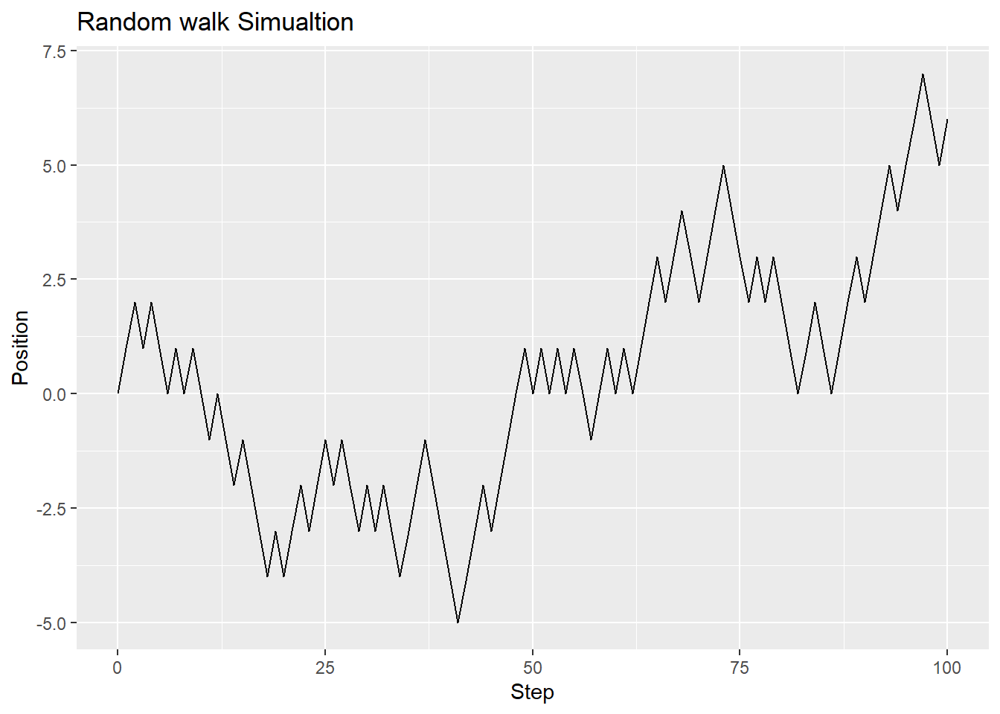
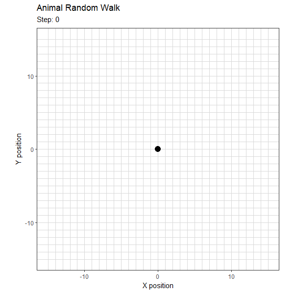
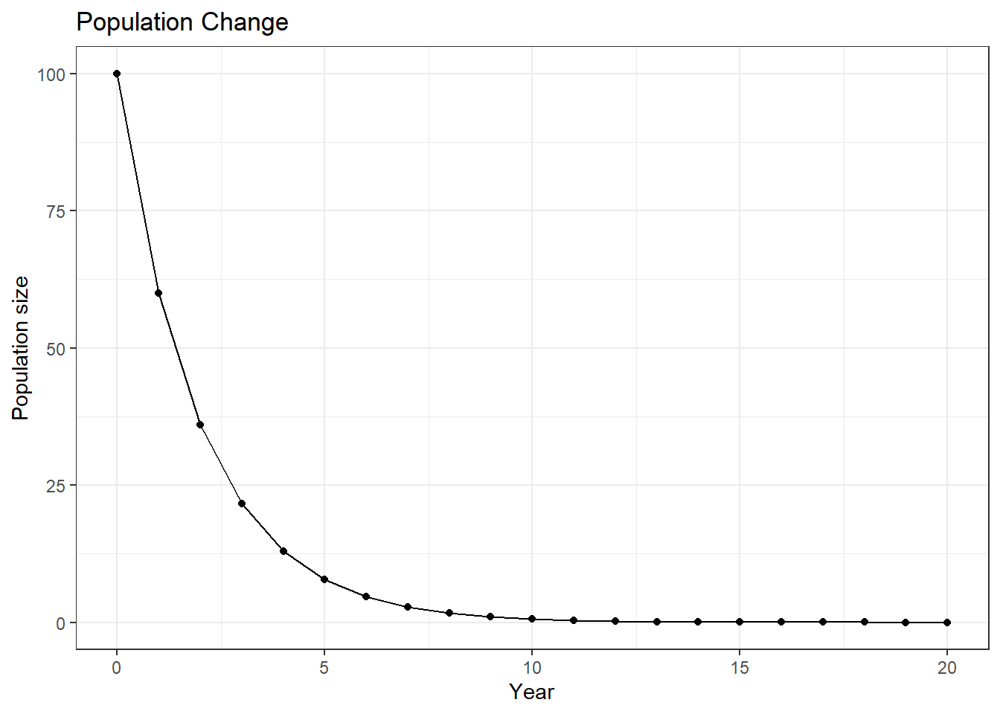
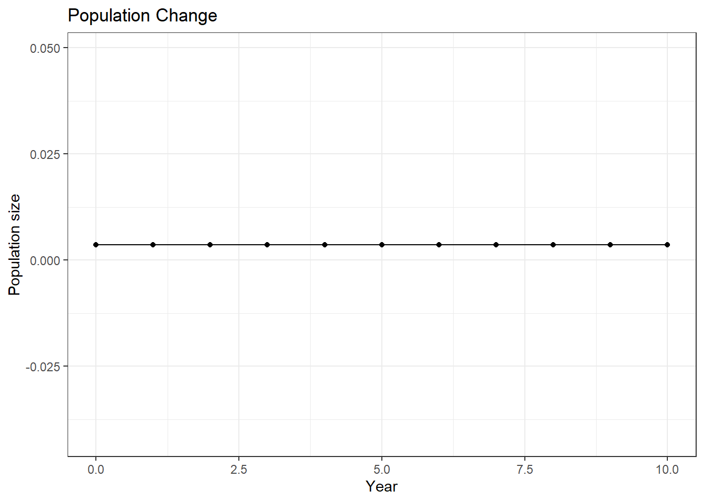
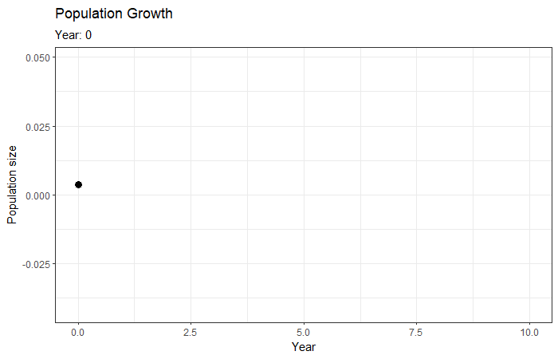
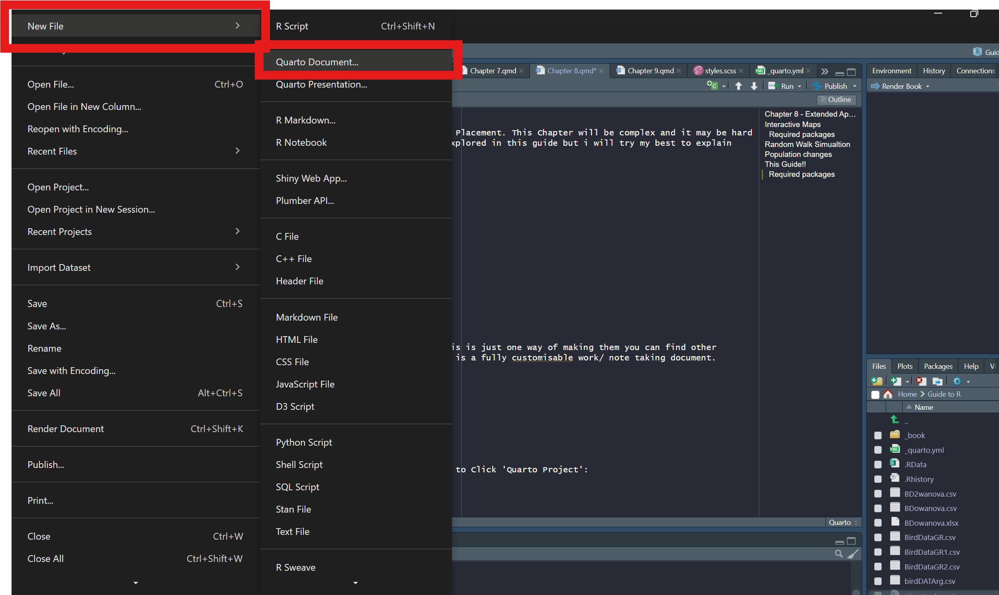

library(leaflet)
birds <- data.frame(
species = c("Blackbird", "Blue Tit", "Woodpigeon"),
lat = c(52.769, 52.771, 52.767),
lng = c(-2.128, -2.125, -2.130)
)
leaflet(birds)%>%
addTiles()%>%
addMarkers(
lng = ~lng,
lat = ~lat,
popup = ~species
)Chapter 8 - Extended Application
This chapter covers mini projects I completed in R throughout my Placement. This Chapter will be complex, and it may be hard to understand certain procedures. It will also contain processes that aren’t explored in this guide, but I will try my best to explain everything as best I can. :)
There are warnings that pop up throughout this section as you open the page and scroll down, i could remove them but there is nothing wrong with my code from what i can see, so i thought it best to let you see examples of possible messages that could appear that don’t actually mean much or effect your results.
Interactive Maps
TipRequired packages
- leaflet
- sf
If you already have a pre-designated shapefile, you can also import it into RStudio. Also, if you have a recording app such as Avenza or another recording app, you can import a CSV file from it into RStudio, and it can classify shapefiles or simply markers for animals.
But RStudio can only work with shapefiles that use the OSGB spatial reference system, so check what your shapefile uses and convert it if needed.
library(sf)Linking to GEOS 3.14.1, GDAL 3.12.1, PROJ 9.7.1; sf_use_s2() is TRUElibrary(leaflet)
my_shape <- st_read("shape.gpkg")Reading layer `lcm_2024' from data source
`C:\Users\Liam\OneDrive - Harper Adams University\Documents\Zoologist guide to R\shape.gpkg'
using driver `GPKG'
Simple feature collection with 70 features and 8 fields
Geometry type: POLYGON
Dimension: XY
Bounding box: xmin: 370196.5 ymin: 319342 xmax: 372263.3 ymax: 320909.6
Projected CRS: OSGB36 / British National Gridmy_shape <- st_transform(my_shape, 4326)This example file does not contain field names, but if you export from any software, you can edit the attribute column to add field names; once you assign values to each, you can add popups like the previous example to show information about each field. But for this example, we are just going to use a basic field boundary GeoPackage:
leaflet(my_shape) %>%
addTiles() %>%
addPolygons(
fillOpacity = 0.5,
weight = 1
)Random Walk Simulation
Another experiment we can run involves random pathing. If we imagine an animal that is, say, lost or has no clear direction, we can simulate a randomly assigned path. The animal can go left, right, or stay stationary. Another handy thing that R can do is animations; we can create this simulated footpath and then animate it.
Question: Simulate 100 movements and plot the bird’s position over time
steps <- 100
position <- 0
positions <- numeric(steps +1)
positions[1] <- position
for (i in 1:steps){
movement <- sample(c(-1,1), size = 1)
position <- position + movement
positions[i +1] <- position
}
positions [1] 0 1 2 1 2 1 0 1 0 1 0 -1 0 -1 -2 -1 -2 -3 -4 -3 -4 -3 -2 -3 -2
[26] -1 -2 -1 -2 -3 -2 -3 -2 -3 -4 -3 -2 -1 -2 -3 -4 -5 -4 -3 -2 -3 -2 -1 0 1
[51] 0 1 0 1 0 1 0 -1 0 1 0 1 0 1 2 3 2 3 4 3 2 3 4 5 4
[76] 3 2 3 2 3 2 1 0 1 2 1 0 1 2 3 2 3 4 5 4 5 6 7 6 5
[101] 6Then we can plot this
library(ggplot2)
random_walk <- data.frame(
Step = 0:steps,
Position = positions
)
ggplot(random_walk,
aes(x = Step,
y = Position)
)+
geom_line()+
labs(
title = "Random walk Simualtion",
x = "Step",
y = "Position"
)
This, as it is, isn’t very informational, so another cool thing we can do with this kind of continuous data is animate it using the gganimate and gifski packages. You just need to follow the format as shown below. Although we have to create very specific conditions:
library(ggplot2)
library(gganimate)
# Number of steps
steps <- 100
# Starting position
x <- 0
y <- 0
# Create the data frame
walk <- data.frame(
Step = 0:steps,
X = numeric(steps + 1),
Y = numeric(steps + 1)
)
# Store starting position
walk$X[1] <- x
walk$Y[1] <- y
# Simulate movement
for (i in 1:steps) {
direction <- sample(
c("up", "down", "left", "right"),
size = 1
)
if (direction == "up") y <- y + 1
if (direction == "down") y <- y - 1
if (direction == "left") x <- x - 1
if (direction == "right") x <- x + 1
walk$X[i + 1] <- x
walk$Y[i + 1] <- y
}library(ggplot2)
library(gganimate)
library(gifski)
random_walk_plot <- ggplot(
walk,
aes(x = X, y = Y)
) +
geom_vline(
xintercept = -15:15,
colour = "grey85"
) +
geom_hline(
yintercept = -15:15,
colour = "grey85"
) +
geom_path(
linewidth = 1
) +
geom_point(
size = 4
) +
coord_fixed(
xlim = c(-15, 15),
ylim = c(-15, 15)
) +
labs(
title = "Animal Random Walk",
subtitle = "Step: {frame_along}",
x = "X position",
y = "Y position"
) +
theme_bw() +
transition_reveal(Step)
random_walk_anim <- animate(
random_walk_plot,
nframes = steps + 1,
fps = 10,
width = 600,
height = 600,
units = "px",
res = 96,
renderer = gifski_renderer()
)`geom_path()`: Each group consists of only one observation.
ℹ Do you need to adjust the group aesthetic?
`geom_path()`: Each group consists of only one observation.
ℹ Do you need to adjust the group aesthetic?anim_save(
"Rwalk.gif",
animation = random_walk_anim
)
Population changes
To simulate population changes over time, we can use the population expectancy equation, which proposes:
Nt+1 = Nt + (births−deaths)
Where we note that:
births = Nt × birth rate
deaths = Nt × death rate
First, we can set the population size and the rates of birth and death so that we have integer-assigned variables that we can simulate:
population <- 100
birth_rate <- 0.3
death_rate <- 0.7Then we want to create a vector that can automatically store the population per year. So, as we go up a year, it stores Vector Value 1; then next year, it stores vector value 2, and so on.
years <- 20
population_size<- numeric(years + 1)
population_size<- populationNow that we have all our variables assigned, we can start to calculate yearly population changes. The following code follows that initial equation that was stated, where the ‘for(i)’ translates the yearly change into a new vector value.
for (i in 1:years){
births <- population*birth_rate
deaths <- population*death_rate
population <- population + births - deaths
population_size[i+1]<- population
}
population_size [1] 1.000000e+02 6.000000e+01 3.600000e+01 2.160000e+01 1.296000e+01
[6] 7.776000e+00 4.665600e+00 2.799360e+00 1.679616e+00 1.007770e+00
[11] 6.046618e-01 3.627971e-01 2.176782e-01 1.306069e-01 7.836416e-02
[16] 4.701850e-02 2.821110e-02 1.692666e-02 1.015600e-02 6.093597e-03
[21] 3.656158e-03Then to visualise the new data:
library(ggplot2)
population_data <- data.frame(
Year = 0:years,
Population = population_size
)
ggplot(population_data,
aes(x = Year, y= Population)
)+
geom_line()+
geom_point()+
theme_bw()+
labs(
title = "Population Change",
x="Year",
y= "Population size"
)
As we can see, the results of this are related to our death rate; with a death rate more than double our birth rate, the population crashes, and if we alter the values, it may look like this:
birth_rate <- 0.5
death_rate <- 0.5
years <- 10
population_size<- numeric(years + 1)
population_size<- population
for (i in 1:years){
births <- population*birth_rate
deaths <- population*death_rate
population <- population + births - deaths
population_size[i+1]<- population
}
population_size [1] 0.003656158 0.003656158 0.003656158 0.003656158 0.003656158 0.003656158
[7] 0.003656158 0.003656158 0.003656158 0.003656158 0.003656158library(ggplot2)
population_data <- data.frame(
Year = 0:years,
Population = population_size
)
ggplot(population_data,
aes(x = Year, y= Population)
)+
geom_line()+
geom_point()+
theme_bw()+
labs(
title = "Population Change",
x="Year",
y= "Population size"
)
Another cool thing we can do with this kind of continuous data is animate it using the gganimate and gifski packages. Just follow the format shown below.
#|include: false
population <- 100
birth_rate <- 0.3
death_rate <- 0.7
years <- 20
population_size<- numeric(years + 1)
population_size<- population
for (i in 1:years){
births <- population*birth_rate
deaths <- population*death_rate
population <- population + births - deaths
population_size[i+1]<- population
}
population_size [1] 1.000000e+02 6.000000e+01 3.600000e+01 2.160000e+01 1.296000e+01
[6] 7.776000e+00 4.665600e+00 2.799360e+00 1.679616e+00 1.007770e+00
[11] 6.046618e-01 3.627971e-01 2.176782e-01 1.306069e-01 7.836416e-02
[16] 4.701850e-02 2.821110e-02 1.692666e-02 1.015600e-02 6.093597e-03
[21] 3.656158e-03library(gganimate)
library(gifski)
library(ggplot2)
library(gganimate)
library(gifski)
population_plot <- ggplot(
population_data,
aes(x = Year, y = Population)
) +
geom_line(linewidth = 1.2) +
geom_point(size = 3) +
labs(
title = "Population Growth",
subtitle = "Year: {frame_along}",
x = "Year",
y = "Population size"
) +
theme_bw() +
transition_reveal(Year)
anim <- animate(
population_plot,
nframes = 100,
fps = 10,
width = 700,
height = 450,
units = "px",
res = 96,
renderer = gifski_renderer()
)`geom_line()`: Each group consists of only one observation.
ℹ Do you need to adjust the group aesthetic?
`geom_line()`: Each group consists of only one observation.
ℹ Do you need to adjust the group aesthetic?anim_save(
"population.gif",
animation = anim
)
This Guide!!
This guide uses HTML to create a web-based document, also called Markdown. This is just one way of making them; you can find other resources that produce the exact same product. Essentially, the end product is a fully customisable work/note-taking document.
TipRequired packages
- Quarto Packages
(These are externally downloaded and attached to Rstudio, will need to visit their official page)
The first step is the exact same as opening a normal RStudio session, but you want to click ‘Quarto Project’:

Second, you will see 3 tabs open at the top of your active console :
- ‘Styles.scss’ - Uses HTML code to give you styles and different visualisations to the markdown
- ‘_quarto.yml’ - The organisation of the markdown; controls the table of contents
- ‘Intro’ or ‘Untitled1.qmd’ - This is the actual page you work on
TipStyles
You can alter this section to change how your file will look; you simply need to add the section and colour change into curly brackets:
“body { background-color: #202124; color: #f5f5f5; }”
This will essentially be a dark mode
The following lines will change the inline code colour:
“code { color: #6ee7ff; }”
TipQuarto yml
The only two section you will need to change in this section are as follows:
chapters: - index.qmd - Chapter 1.qmd
This is the section that processes pages, you must save the pages as qmd documents and then add the to this section in the order you would like them to appear in the booklet.
format: html: theme: darkly css: styles.scss toc: true toc-depth: 6
This section will be themes, how you book looks. Unlike the styles section which is more detailed, this will more broadly control styles. Such as designating the page to use for css (detailed styles), adding a table of contents (toc = true), then you can control the depth of the table of contents toc-depth: X.
TipR code chunks
When you are writing in an R quarto document, if everything you types picked up as a line of code then you would be getting a million different errors and warnings. so the way its formatted makes it so that anything you types, such as this sentence here is just normal text, similar to a book. Whereas when you designate a code chunk you tell R to run that section as normal code. They are designated by three ``` followed by ‘{r}’. then after your final line of code, close the chunk by adding three more apostrophes.
You can also style these chunks to show what shows in your book, throughout this book i have kept it so that everything is run and visible but you may want it otherwise:
| Option | What it does |
|---|---|
| echo: false` | Hides the R code |
| eval: false | Displays code without running it |
| include: false | Runs code but hides code and output |
| warning: false | Hides warnings |
| message: false | Hides messages |
| results: hide | Hides printed results |
| output: false | Hides standard output |
| label: fig-example | Labels a code chunk for referencing |
| fig-cap: “Caption” | Adds a figure caption |
| fig-width: 7 | Sets figure width in inches |
| fig-height: 5 | Sets figure height in inches |
| out-width: “80%” | Sets displayed figure width |
| code-fold: true | Makes code collapsible |
TipCallouts
Callouts create coloured information boxes; these are useful for explanations, reminders, and warnings in your book. The format for these is as follows:
Three ::: then {. callout-note}, making sure to close again with another three :::. You can also make it so that your callout box closes by adding “collapse=”true” to the end.
There are multiple types of callout notes you can do:
| Callout type | Syntax | Purpose |
|---|---|---|
| Note | .callout-note | General information |
| Tip | .callout-tip | Helpful advice |
| Important | .callout-important | Highlight key concepts |
| Warning | .callout-warning | Highlight potential mistakes or problems |
| Caution | .callout-caution | Draw attention to things to be careful about |
These are all the steps you need in order to build any guide or information storage you want using R!